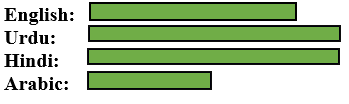

MD ASADULLAH

Prpfile summary
“A self-driven and meticulous BE-CSE 2nd year student skilled at analysing data, solving problems and proficient in English speaking. Seeking opportunities in the field of software engineering”.
Career objective
To take up a challenging career and grows with honesty, loyalty, good relationship and best performance and translate my experience, knowledge, skills and abilities into value for an organization.
Education
BE-CSE, Chandigarh university (2023-2027).
- -Last semester SGPA 7.67.
- -C, C++, Team skill, Life skill, Communication skill, Academic writing skill and IPR, Design thinking and creativity for innovation.
12th, C M Science college Darbhanga (2020-2022)
- -Academic Marks – 77.80%.
10th, Public School Darbhanga (2020)
- -Academic Marks – 85.80%.
- 3rd rank in mathematics competition in District organise on PremChand Jayanti.
Projects
Amazon website clone | Html, CSS
- Created a fully responsive Amazon website clone
- Optimized the website's layout and design
Spotify website clone| Html, CSS, Bootstrap
- Developed a Spotify website clone
- Utilized Bootstrap's grid system and components
- Enhanced UI/UX
- Implemented key features
Technical competencies

Interpersonal skills
- Team leadership
- Management & Coordination
- Decision Making
- Adaptability
- Conflict resolution
Certifications & Awards
- Diploma in computer application: Successfully completed on 30th march 2021 from CAD ZONE with grade outstanding “A”.
- Certification in “THE FUNDAMENTALS OF DIGITAL MARKETING” from Google Digital unlocked.
- Certification in “CYBER SECURITY” from Digital Adda
- Certification in GENERIC ONLINE TRAINING IN CYBER SECURITY from Ministry of Electronics and Information Technology
- Prompt Engineering for ChatGPT: Successfully completed on 30th June 2024 from Great Learning
Extra Curricular & Co-curricular Achievements
- Certificate from the World Health Organization (WHO) for completing their COVID-19 related courses/assessment.
- I'm honored to have participated in mental health & vaccine development related program from HARVARD MEDICAL SCHOOL, one of the world's most prestigious medical institutions.
- Certification from UNDP in “Gender equality, women's empowerment and leadership in the context of national biodiversity planning and reporting”
- Participated Poshan Abhiyan e-learning program by Indian Council of Medical Research (ICMR) - National Institute of Nutrition (NIN).
- Certification from UNDP in “Applying resilience thinking to national biodiversity plans “.
- Certificate from the World Health Organization (WHO) for completing "Mpox and the 2022-2023 global outbreak" courses/assessment.
- Certificate of participation in "An Introduction to Human Rights" from AMNESTY INTERNATIONAL Human Right Academy.
Languages known

Others
Contact Me
My Interests & Hobbies
© Md Asadullah. All rights reserved.